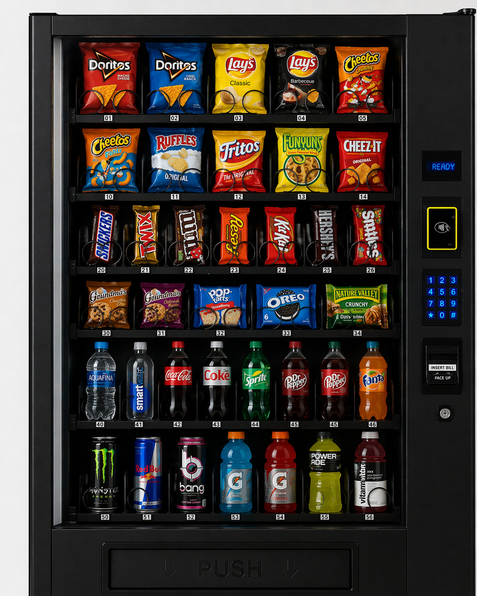

Snack vending machine.
The classic. Shelf-stable snacks, no refrigeration to run, and the easiest way to start a vending business.
- Ambient (no refrigeration)
- Glass display front
- Adjustable spirals
- Card & contactless ready
The classic snack machine. Simple, reliable, easy to start with.
A non-refrigerated (ambient) snack machine sells products that don't need chilling: chips, chocolate, bars, nuts, lollies and even personal-care items. It's the machine most vending businesses start with, and for good reason.
Products last a long time, there's no cooling system to maintain, and almost every location understands what it is. That makes it simpler to stock, simpler to run and simpler to pitch.
What makes it work.
Simple to run
No refrigeration, long shelf-life stock, fewer things to manage.
Low waste
Shelf-stable products mean less spoiled stock.
Easy to place
Site owners know exactly what a snack machine is.
Great first machine
Learn the business with fewer moving parts, then add specialty machines.
Products that sell.
- Chips and savoury snacks
- Chocolate and bars
- Nuts and trail mix
- Lollies and gum
- Personal-care items and essentials
Start with a tight range, then let sales data guide what stays. Read our stocking guide →

Where it sells.
Offices
Steady weekday demand.
Warehouses
Snacks for every shift.
Apartment buildings
Convenience without leaving the building.
Entertainment venues
Impulse buys at peak times.
Specs.
| Price | Price on enquiry |
|---|---|
| Interface | Keypad |
| Temperature | Ambient |
| Dimensions | On enquiry |
| Capacity | On enquiry |
| Suitable products | Chips, chocolate, bars, nuts, lollies, personal-care items |
| Ideal locations | Offices, warehouses, apartment buildings, shopping centres, entertainment venues |
| Shipping | On enquiry |
Questions.
Is a snack machine a good first vending machine?
For many people, yes. It's simple to run and products keep for a long time. Read how to start a vending business for the full picture.
Can I sell chocolate in a non-refrigerated machine?
Yes. Just keep in mind that very warm locations can affect chocolate. In hot spots, a refrigerated snack machine may be the better choice.
How much does it cost?
Pricing is available on enquiry. Ask us for a quote.
Can I sell things other than snacks?
Yes. Many operators add personal-care items, phone accessories or other small essentials, as long as they fit the spirals.
Compare options.
Ready to start with a snack machine?
Tell us about your location and we'll come back with pricing and advice.